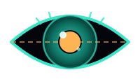

dsh-eye.DeepSeek 很聪明，但它看不见。
让没有视觉能力的模型，看见 这个世界。
详细描述图片：场景、元素位置、颜色风格、图中文字、构图问题。本地路径 / URL / data URI 皆可。
针对图片提出具体问题，让视觉模型替你回答："图里有多少只猫？""这个报错是什么意思？"
逐字提取图片中的全部文字，保持原始排版顺序，不做任何加工。
文字描述生成图片，自动保存到本地并识别格式；后端与看图完全独立，也可一键复用。
| 预设 | 看图端点 | 看图模型 | 画图模型 |
|---|---|---|---|
| glm | open.bigmodel.cn/api/paas/v4 | glm-4v-flash 免费 | cogview-3-flash |
| qwen | dashscope.aliyuncs.com/compatible-mode/v1 | qwen-vl-max | wanx2.1-t2i-flash |
| openai | api.openai.com/v1 | gpt-4o | gpt-image-1 |
| ollama | localhost:11434/v1（本地） | llava | — |
把 dsh-eye 文件夹复制到 $env:USERPROFILE\.agents\skills\
powershell -ExecutionPolicy Bypass -File dsh-eye\scripts\setup.ps1
看图端点 → 模型 → Key → 画图（可复用看图配置）
分享图片路径 / URL，或说"帮我画一只赛博朋克风格的猫"
只用 Node 内置模块，复制即用，任何机器都能跑。
看图与画图端点、模型、Key 互不干扰，也可一键复用。
缺 Key、格式异常、API 报错都有中文提示，而非裸堆栈。
SKILL.md 要求模型"有工具就用"，从根上消除"模型不支持图片"。